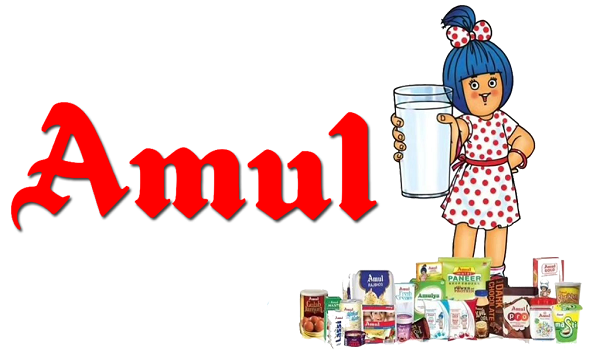

<div class="w-full  bg-gradient-to-b from-white to-gray-50">
  <div class="container mx-auto px-4 sm:px-6 lg:px-8 py-12 md:py-16 lg:py-20">
  <h2 class="text-4xl sm:text-5xl md:text-6xl text-center chelsea-market-regular font-bold bg-gradient-to-r from-blue-900 via-teal-600 to-blue-400 bg-clip-text text-transparent mb-8 md:mb-12 lg:mb-16">
  Know Amul
</h2>

    

    <div class="grid grid-cols-1 lg:grid-cols-12 gap-10 lg:gap-12">
      <!-- Main Content Column -->
      <div class="lg:col-span-6">
        <div class="bg-white rounded-xl shadow-lg overflow-hidden transition-transform duration-300 hover:shadow-xl ">
          <!-- Blog Image -->
          <div class="flex items-center justify-center p-4">
            
          </div>

          <div class="p-4 md:p-6">
            <!-- Blog Title -->
            <h3 class="text-xl md:text-2xl font-semibold text-teal-900 chelsea-market-regular mb-3">
              From Village to Federations: The Structure of the Amul Dairy Model
            </h3>
            <!-- Blog Description -->
            <p class="text-gray-600 text-sm md:text-base leading-relaxed">
              The Amul Model of dairy development is a three-tiered structure with the dairy
              cooperative societies at the village level federated under a milk union at the district level and a federation
              of member unions at the state level.

            </p>
          </div>
        </div>
      </div>

      <!-- FAQ Column -->
      <div class="lg:col-span-6">
        <div class="bg-white rounded-xl shadow-lg overflow-hidden h-full">
          <ul class="divide-y divide-gray-200">
            <li *ngFor="let faq of faqs; let i = index">
              <details class="group" >
                <summary class="flex items-center gap-3 px-6 py-4 font-medium marker:content-none hover:cursor-pointer hover:bg-gray-50 transition-colors duration-200">
                  <svg class="w-5 h-5 text-gray-500 transition-transform duration-200 group-open:rotate-90" 
                       xmlns="http://www.w3.org/2000/svg" width="16" height="16" fill="currentColor" viewBox="0 0 16 16">
                    <path fill-rule="evenodd" d="M4.646 1.646a.5.5 0 0 1 .708 0l6 6a.5.5 0 0 1 0 .708l-6 6a.5.5 0 0 1-.708-.708L10.293 8 4.646 2.354a.5.5 0 0 1 0-.708z"></path>
                  </svg>
                  <span class="text-gray-700">{{ faq.question }}</span>
                </summary>

                <article class="px-6 py-4 bg-gray-50">
                  <p class="text-gray-600">
                    {{ faq.answer }}
                  </p>
                </article>
              </details>
            </li>
          </ul>
        </div>
      </div>
    </div>
  </div>
</div>


